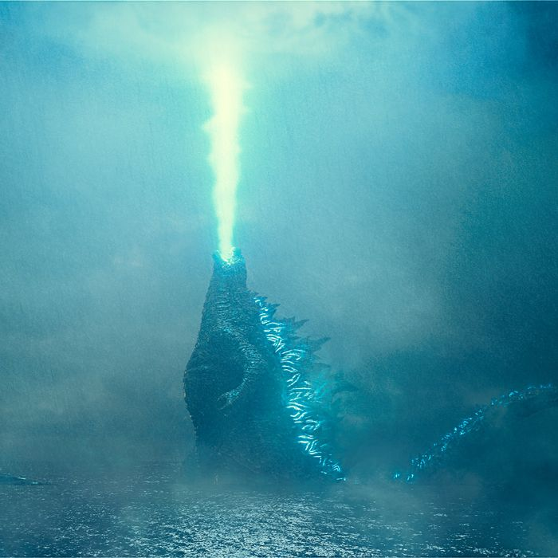

Godzilla é um monstro gigante fictício que apareceu inicialmente em filmes japoneses de ficção científica e terror. Foi visto pela primeira vez em 1954 no filme "Gojira", produzido pela Toho Film Company Ltd. É conhecido por sua aparência semelhante a um dinossauro, coberto com placas peculiares nas costas, capaz de disparar uma forma de fogo ou raio atômico pela boca e também por ser quase indestrutível.

(#TeamZilla)
Navegamento das paginas:
Home
King Kong